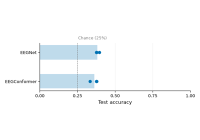
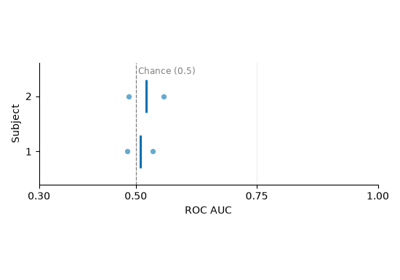
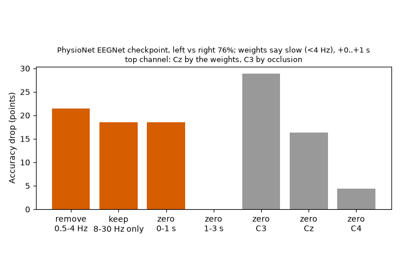

braindecode.models.EEGNet#
- class braindecode.models.EEGNet(n_chans=None, n_outputs=None, n_times=None, final_conv_length='auto', pool_mode='mean', F1=8, D=2, F2=None, kernel_length=64, *, depthwise_kernel_length=16, pool1_kernel_size=4, pool2_kernel_size=8, conv_spatial_max_norm=1, activation=<class 'torch.nn.modules.activation.ELU'>, batch_norm_momentum=0.01, batch_norm_affine=True, batch_norm_eps=0.001, drop_prob=0.25, final_layer_with_constraint=False, norm_rate=0.25, chs_info=None, input_window_seconds=None, sfreq=None, **kwargs)[source]#
EEGNet model from Lawhern et al (2018) [Lawhern2018].
Convolution

Architectural Overview
EEGNet is a compact convolutional network designed for EEG decoding with a pipeline that mirrors classical EEG processing: - (i) learn temporal frequency-selective filters, - (ii) learn spatial filters for those frequencies, and - (iii) condense features with depthwise-separable convolutions before a lightweight classifier.
The architecture is deliberately small (temporal convolutional and spatial patterns) [Lawhern2018].
Macro Components
Temporal convolution Temporal convolution applied per channel; learns
F1kernels that act as data-driven band-pass filters.Depthwise Spatial Filtering. Depthwise convolution spanning the channel dimension with
groups = F1, yieldingDspatial filters for each temporal filter (no cross-filter mixing).Norm-Nonlinearity-Pooling (+ dropout). Batch normalization → ELU → temporal pooling, with dropout.
Depthwise-Separable Convolution Block. (a) depthwise temporal conv to refine temporal structure; (b) pointwise 1x1 conv to mix feature maps into
F2combinations.Classifier Head. Lightweight 1x1 conv or dense layer (often with max-norm constraint).
Convolutional Details
Temporal. The initial temporal convs serve as a learned filter bank: long 1-D kernels (implemented as 2-D with singleton spatial extent) emphasize oscillatory bands and transients. Because this stage is linear prior to BN/ELU, kernels can be analyzed as FIR filters to reveal each feature’s spectrum [Lawhern2018].
Spatial. The depthwise spatial conv spans the full channel axis (kernel height = #electrodes; temporal size = 1). With
groups = F1, each temporal filter learns its own set ofDspatial projections—akin to CSP, learned end-to-end and typically regularized with max-norm.Spectral. No explicit Fourier/wavelet transform is used. Frequency structure is captured implicitly by the temporal filter bank; later depthwise temporal kernels act as short-time integrators/refiners.
Additional Comments
Filter-bank structure: Parallel temporal kernels (
F1) emulate classical filter banks; pairing them with frequency-specific spatial filters yields features mappable to rhythms and topographies.Depthwise & separable convs: Parameter-efficient decomposition (depthwise + pointwise) retains power while limiting overfitting [Chollet2017] and keeps temporal vs. mixing steps interpretable.
Regularization: Batch norm, dropout, pooling, and optional max-norm on spatial kernels aid stability on small EEG datasets.
The v4 means the version 4 at the arxiv paper [Lawhern2018].
- Parameters:
n_outputs (
Optional[int]) – Number of outputs of the model. This is the number of classes in the case of classification.n_times (
Optional[int]) – Number of time samples of the input window.final_conv_length (
str|int) – Length of the final convolution layer. If “auto”, it is set based on n_times.pool_mode (
str) – Pooling method to use in pooling layers.F1 (
int) – Number of temporal filters in the first convolutional layer.D (
int) – Depth multiplier for the depthwise convolution.F2 (
Optional[int]) – Number of pointwise filters in the separable convolution. Usually set toF1 * D.kernel_length (
int) – Length of the temporal convolution kernel.depthwise_kernel_length (
int) – Length of the depthwise convolution kernel in the separable convolution.pool1_kernel_size (
int) – Kernel size of the first pooling layer.pool2_kernel_size (
int) – Kernel size of the second pooling layer.conv_spatial_max_norm (
int) – Maximum norm constraint for the spatial (depthwise) convolution.activation (
type[Module]) – Non-linear activation function to be used in the layers.batch_norm_momentum (
float) – Momentum for instance normalization in batch norm layers.batch_norm_affine (
bool) – If True, batch norm has learnable affine parameters.batch_norm_eps (
float) – Epsilon for numeric stability in batch norm layers.drop_prob (
float) – Dropout probability.final_layer_with_constraint (
bool) – IfFalse, uses a convolution-based classification layer. IfTrue, apply a flattened linear layer with constraint on the weights norm as the final classification step.norm_rate (
float) – Max-norm constraint value for the linear layer (used iffinal_layer_conv=False).chs_info (
Optional[list[Dict]]) – Information about each individual EEG channel. This should be filled withinfo["chs"]. Refer tomne.Infofor more details.input_window_seconds (float) – Length of the input window in seconds.
sfreq (float) – Sampling frequency of the EEG recordings.
**kwargs – The description is missing.
- Raises:
ValueError – If some input signal-related parameters are not specified: and can not be inferred.
Notes
If some input signal-related parameters are not specified, there will be an attempt to infer them from the other parameters.
References
[Lawhern2018] (1,2,3,4)Lawhern, V. J., Solon, A. J., Waytowich, N. R., Gordon, S. M., Hung, C. P., & Lance, B. J. (2018). EEGNet: a compact convolutional neural network for EEG-based brain–computer interfaces. Journal of neural engineering, 15(5), 056013.
[Chollet2017]Chollet, F., Xception: Deep Learning with Depthwise Separable Convolutions, CVPR, 2017.
Hugging Face Hub integration
When the optional
huggingface_hubpackage is installed, all models automatically gain the ability to be pushed to and loaded from the Hugging Face Hub. Install with:pip install braindecode[hub]
Pushing a model to the Hub:
from braindecode.models import EEGNet # Train your model model = EEGNet(n_chans=22, n_outputs=4, n_times=1000) # ... training code ... # Push to the Hub; ``datasets`` and ``base_model`` go to the card model.push_to_hub( repo_id="username/my-eegnet-model", commit_message="Initial model upload", model_card_kwargs={"datasets": ["BNCI2014_001"]}, )
Loading a model from the Hub:
from braindecode.models import EEGNet # Load pretrained model model = EEGNet.from_pretrained("username/my-eegnet-model") # Data the weights were trained on, from the Hub model card print(model.card_data.datasets if model.card_data else None) # Load with a different number of outputs (head is rebuilt automatically) model = EEGNet.from_pretrained("username/my-eegnet-model", n_outputs=4)
Extracting features and replacing the head:
import torch x = torch.randn(1, model.n_chans, model.n_times) # Extract encoder features and a mean-pooled 2-D embedding out = model(x, return_features=True) embedding = out["embedding"] # (batch, dim) features = out["features"] # Replace the classification head model.reset_head(n_outputs=10)
Note that
torch.jit.scriptreturns features only on models whoseforwarddeclaresreturn_features.Saving and restoring full configuration:
import json config = model.get_config() # all __init__ params with open("config.json", "w") as f: json.dump(config, f) model2 = EEGNet.from_config(config) # reconstruct (no weights)
All model parameters (both EEG-specific and model-specific such as dropout rates, activation functions, number of filters) are automatically saved to the Hub and restored when loading.
See Loading and Adapting Pretrained Foundation Models for a complete tutorial.
Methods
Examples using braindecode.models.EEGNet#

Which data did a pretrained checkpoint see? Reading the model card

Experiment configuration with Pydantic and Exca

Cross-session motor imagery with deep learning EEGNet v4 model

Auditing what a decoder relies on from its weights